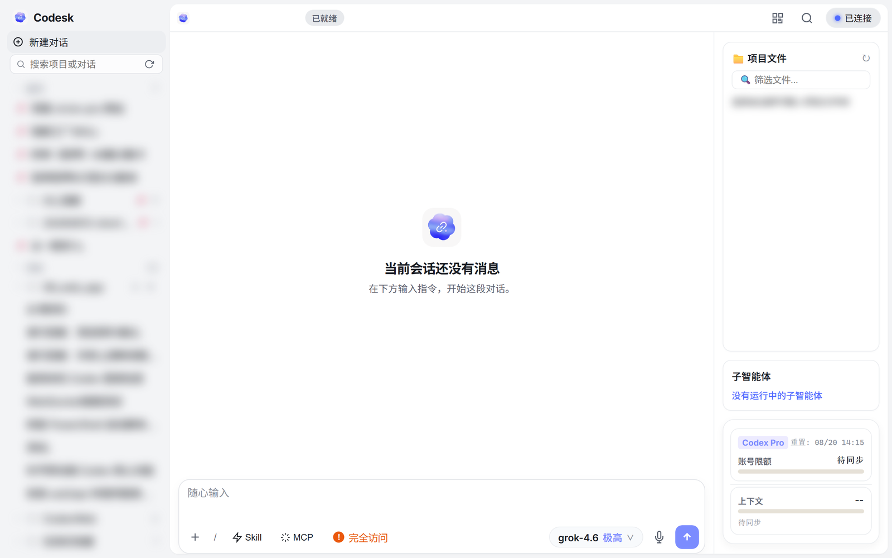
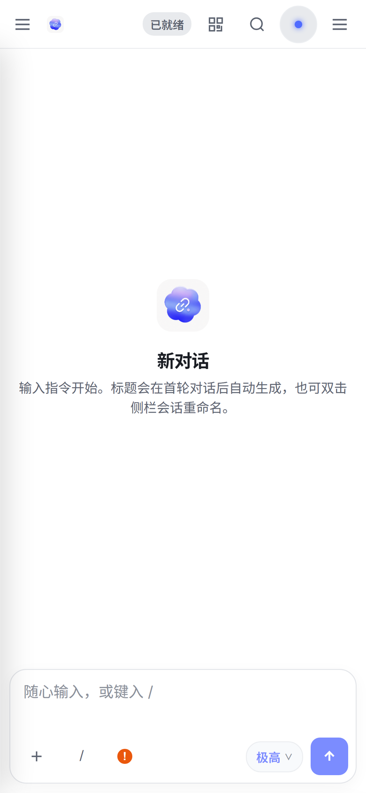
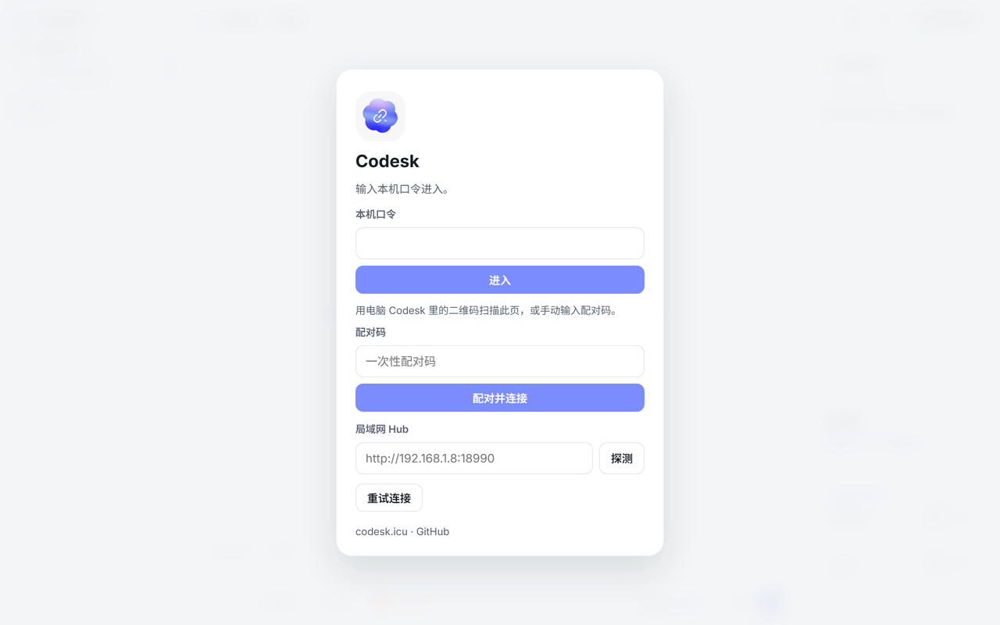
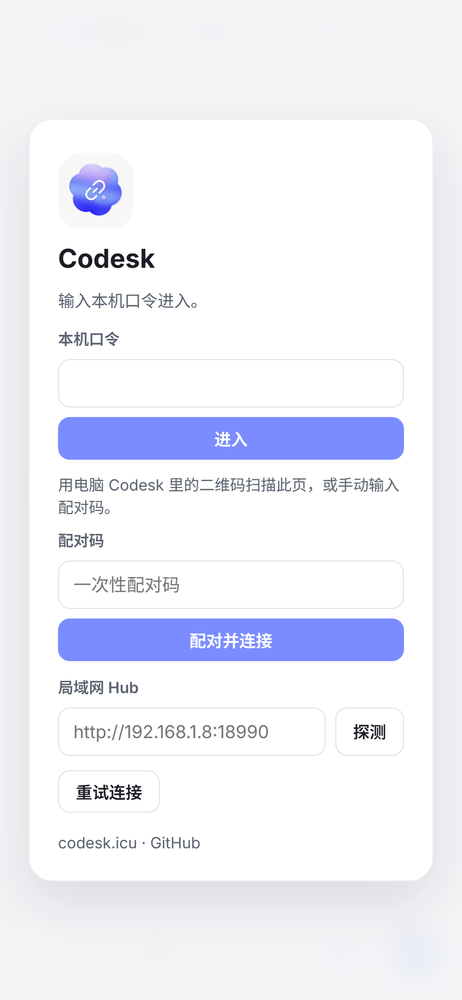

无缝流转
和 Desktop / VS Code 同源。列表一样，thread 还是那个 thread。出门接着干，不丢上下文。
进了 ICU，还要遥控 Codex
电脑上的 Codex，手机上接着干。同一份 session，和桌面一模一样：发、停、审批，无缝流转。不是另开云，不是新开会话。


Download & Platform
无论是 Android 独立原生应用、iOS 沉浸式 PWA，还是桌面托盘守护，Codesk 均提供原汁原味的无缝体验。
Product
Codesk 是本机已登录 Codex 的遥控器。桌面、VS Code、手机看同一份对话、同一个 thread、同一套上下文。电脑还在跑，人已经走开——审批弹出来，补一句、点允许、或者停掉。接着刚才那条。
和 Desktop / VS Code 同源。列表一样，thread 还是那个 thread。出门接着干，不丢上下文。
遥控的是你自己那台电脑。凭据留在本机，不把账号搬到云上，也不多人共用。
人离开工位，对话不能断。该批准就批准，该停就停，该补一句就补一句。
How
不换命令，不换会话，不把活搬到云上。电脑醒着、Hub 开着，就能接着干。
Desktop 或 VS Code 都行。Hub 读的是本机同一份会话，不是再开一条线。
同一 WiFi 用家里码，出门用出门码。配对一次，手机就是遥控器。
发、停、审批，和桌面来回切。电脑休眠或 Hub 没开，就停工。不装在线。


Compare
官方 Remote 能控电脑，但连接慢、不稳定。其余大多另起炉灶：新开会话，接不上你桌面上正在跑的那一份。Codesk 只做一件事——同一份 session，丝滑流转。
官方能控电脑，但通道绕、连得慢、还容易断。Codesk 连回你自己那台机器，更快，更稳。同样是遥控本机，不必走官方慢通道。
Happy 要用包装命令代替原生 Codex，切到手机时会重启会话。桌面 Codex / VS Code 里那一份，并不是同一条。Codesk 不换壳、不另开。
Paseo 是远程新开会话。电脑上正在跑的 Codex，它接不上。Codesk 的列表、thread、上下文，都和桌面一模一样。
MindFS 同样另起炉灶。电脑聊到一半，手机看不到那条线。Codesk 把桌面上的那条线接到手机上，接着干。
| Codesk | 官方 Remote | Happy Coder | Paseo | MindFS | |
|---|---|---|---|---|---|
| 同一份桌面 session | 是。和 Desktop / VS Code 同源 | 走官方通道控电脑 | 否。远程会重启会话 | 否。只能新开 | 否。只能新开 |
| 接着刚才那条 | 丝滑流转，不另起炉灶 | 能控，但连接慢、易断 | 接不上桌面那一份 | 同步不了电脑会话 | 同步不了电脑会话 |
| 连接性能 | 更快、更稳（微秒级本地读） | 慢，不稳定 | 自有包装通道 | 独立远程会话 | 独立远程会话 |
| 是不是另开云 | 不是。是你自己的电脑 | 官方远程 | 包装 CLI，另起炉灶 | 另起炉灶 | 另起炉灶 |
对比针对「能不能接着电脑上那一份 Codex 干」。官方 Remote 的问题是通道；其余是会话不是同一份。
FAQ
了解关于连接、权限、安全以及多端协同的一切疑问。
“家里码”是常驻安全码，在同一 WiFi 局域网下直连电脑，完全不经过外部中继服务器，响应速度极快；“出门码”是一次性动态配对码，人在外面时通过端到端加密中继通道连回电脑主机。
在 iPhone / iPad 的 Safari 浏览器中打开您的 Codesk 地址，点击浏览器底部的「分享」图标，选择「添加到主屏幕」。添加到桌面后，即是一个完全消除地址栏与 Tab 栏的独立全屏原生 App。
Codesk 恪守“一人一机，凭据留在本机”的极客安全原则，不设云端代跑队列，也不存储您的账号 Token。电脑是真正的执行引擎，电脑工作、手机遥控；电脑休眠即停工，绝不泄漏数据。
不会。Codesk 内部与桌面共享同一把文件与会话锁。桌面开着时写入不抢会话，手机端实时呈现流式输出；桌面空闲时 Hub 接替推进，双端无缝同步。
Honest
本机要已登录 Codex Desktop 或 VS Code。手机只是遥控器。
Hub 没开、电脑睡着，就不能干活。没有离线队列，不装在线。
不共享账号，不把凭据搬出这台电脑。能打开 Hub，就等于能操作你的 Codex。